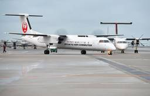
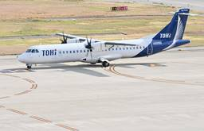
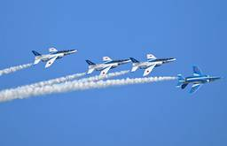
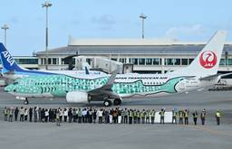
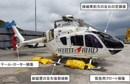

Aviation Wire
https://www.aviationwire.jp
航空経済紙「Aviation Wire」は、航空機やエアライン、空港、官公庁に関する情報や各種統計などをお届けして参ります。
フィード
ICAO、9.11から25年で航空保安強化 無人機やサイバー攻撃警戒
Aviation Wire
ICAO（国際民間航空機関）の大沼俊之理事会議長とフアン・カルロス・サラサール事務局長は現地時間9月11日、2001年に起きた米同時多発テロから11日で25年を迎えたことから共同声明を発表し、犠牲者2977人を追悼する […]
10時間前

RAC Q400CC後継機やスカイマーク737MAX予約登録 国交省航空機登録26年7月分
Aviation Wire
国土交通省航空局（JCAB）によると、2026年7月の航空機登録は、予約登録受付が13機、新規登録が5機、移転登録が9機、変更登録が14機、抹消登録が4機で、予約登録取り下げはなかった。 予約登録受付では、琉球エアー […]
12時間前

トキエア、7月の搭乗率64.6％ 最低は新潟－神戸48.4％
Aviation Wire
トキエア（TOK/BV）の2026年7月の搭乗率は64.6％（前年同月比5.2ポイント上昇）だった。 国土交通省によると、輸送人員（≒旅客数）が これより先は会員の方のみご覧いただけます。 無料会員は、有料記事を月あ […]
19時間前
大韓航空、Starlink機内Wi-Fi 9/15開始 対象便は全クラス無料
Aviation Wire
大韓航空（KAL/KE）は9月11日、米スペースXの衛星通信「Starlink（スターリンク）」を使った機内Wi-Fiサービスを15日から始めると発表した。Starlinkを導入した機材の対象便では、全クラスで無料提供 […]
1日前
完全自動飛行ドローン、JAL整備現場どう変わる？ 効率向上も最後は「整備士の目」 1
1
Aviation Wire
日本航空（JAL/JL、9201）は9月11日、仏Donecle製の完全自動飛行ドローン「Iris GVI（アイリスGVI）」による機体外観検査のデモ飛行を、羽田空港の格納庫で報道関係者に公開した。従来の目視検査と比べ […]
1日前
JAL、完全自動ドローンで機体検査 高所作業代替で整備短縮へ
Aviation Wire
日本航空（JAL/JL、9201）とフランスの航空機整備用ドローンメーカーDonecleは、完全自動飛行ドローンを使った機体外観検査の検証を実施している。航空機メーカーの整備マニュアルで使用を認められた完全自動飛行ドロ […]
2日前
JAL、スカイミュージアムに「航空気象アカデミー」9/28開設
Aviation Wire
日本航空（JAL/JL、9201）は9月11日、羽田空港内の見学施設「JAL SKY MUSEUM（JALスカイミュージアム）」に、新コース「JAL航空気象アカデミー」を開設すると発表した。初回は28日で、元JAL客室 […]
2日前

ブルーインパルス、国産SAF使用へ 9/19愛知で展示飛行
Aviation Wire
航空自衛隊のアクロバット飛行チーム「ブルーインパルス」は9月19日、愛知県内上空で実施する展示飛行で、燃料の一部に国産のSAF（持続可能な航空燃料）を使用する。 展示飛行は、第20回アジア競技大会（2026/愛知・名 […]
2日前

JTA、伊丹19年ぶり再就航へ 運輸審議会が審議開始
Aviation Wire
国土交通大臣の諮問機関である運輸審議会は9月10日、日本航空（JAL/JL、9201）グループで沖縄を拠点とする日本トランスオーシャン航空（JTA/NU）が提出した伊丹空港への運航許可申請の審議を開始した。JTAは冬ダ […]
2日前

25年度の航空事故8件、重大インシデント2件＝国交省
Aviation Wire
国土交通省航空局（JCAB）が発表した、2025年度の航空事故や重大インシデントの発生状況をまとめた「航空輸送の安全にかかわる情報」によると、航空事故は8件、航空事故につながりかねない「重大インシデント」は2件、安全上 […]
2日前